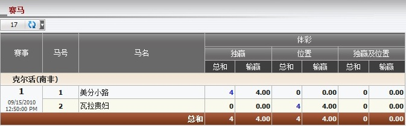

赛马
定义:
显示总代理基于注单占成数的输赢, 投注类型为独赢, 位置或独赢/位置。这份报告只显示当天的所有进行中及已结算的注单。 要查看投注历史, 点击总和列中的数额。

图 1.1
对于 克尔活 (南非), 会员投注于马匹:
- PENNY LANE: 投注额 = 20, 投注类型: 独赢, 总代理占成 = 20%.
--> 总代理基于占成的所得 = 投注额 * 总代理占成 = 20 * 20% = 4.
- DAME DE VALOIS: 投注额 = 20, 投注類型: 位置, 总代理占成 = 20%.
--> 总代理基于占成的所得 = 投注额 * 总代理占成 = 20 * 20% = 4.
注: 如果这些注单仍在进行中, 所有输/赢数额为 0。